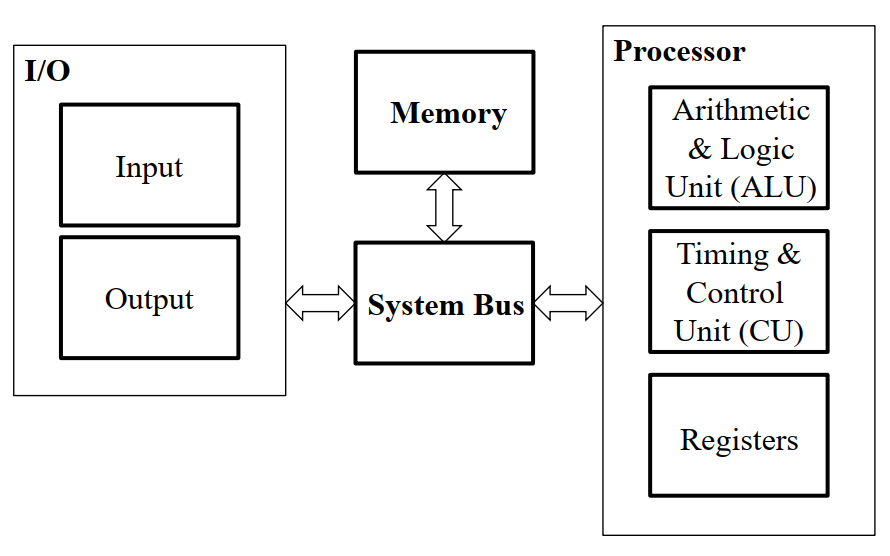
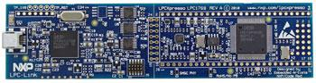
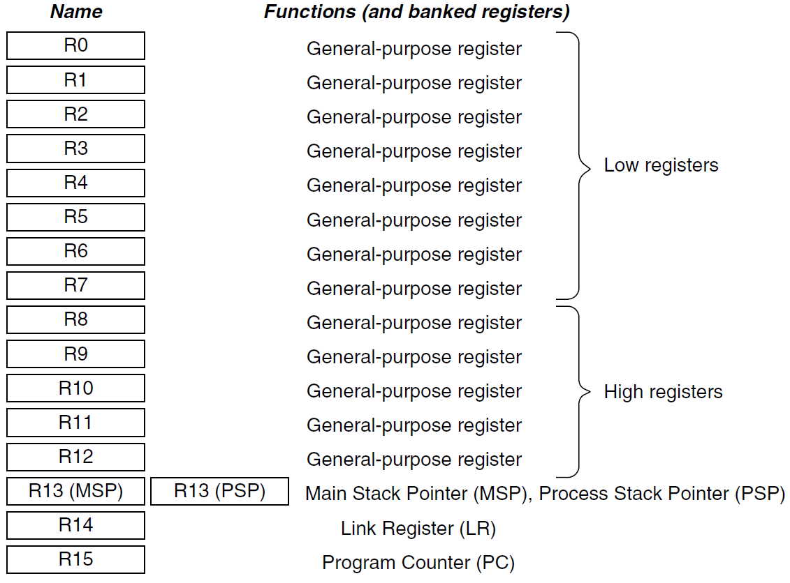
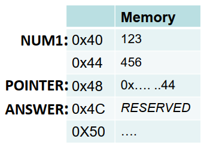
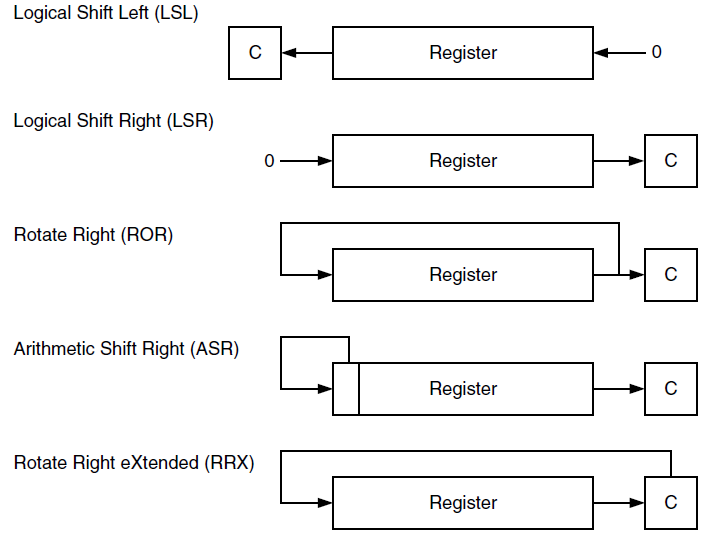

计算机组成-知识点整理（上）
Introduction & Microprocessor Concepts
Functional Units

Processor Components
Arithmetic & Logic Unit (ALU) for performing arithmetic & logical operations, usually on word*-size data operands.
Timing & Control Unit (CU) for fetching program instructions & data from memory, executing them one after another, & transferring the results back to memory.
Registers (typically 16 or 32), small amounts of fast storage each of which holds one word* of data. Usually classified into general-purpose & special-purpose:
Program Counter (PC)
Link Register (LR)
Instruction Register# (IR)
Stack Pointer (SP)
*architecture-dependent; #read-only
The Registers
The General purpose registers hold data & addresses.
The PC register holds the memory address of the current/next instruction.
The IR holds the current instruction.
The LR stores the return address when a subroutine/function is called.
The SP holds the memory address of the last (most recent) data in the stack memory.
Memory Organization
Memory consists of many millions of cells. Each cell holds a bit of information, 0 or 1.
Information usually handled in larger units: words/bytes.
A word is a group of n consecutive bits. A word length is usually between 16 and 64 bits. The memory is thus a collection of consecutive words of the size specified by the word length.
In our 32-bit ARM context:
- word = 32 bits
- byte = 8 bits
Instructions & Sequencing
Basic types of instruction a computer must support:
- Data transfers to & from the memory, e.g. load, store
- Arithmetic & logical operations on data, e.g. add, or
- Program sequencing & control, e.g. branch
RISC & CISC
RISC: Reduced Instruction Set Computers
CISC: Complex Instruction Set Computers
| RISC | CISC |
|---|---|
| Simple Instruction Type; Reduced Set | Complex; Extended Set |
| Fixed Instruction Length: One Word | Variable Instruction Length: Multi-Word |
| One Cycle/Instruction (Except Load & Store) | Multiple Cycles/Instruction |
| Instructions Accessing Memory: Load & Store | Almost All Instructions From The Set |
| Arithmetic/Logic Operands Must Be In Registers | Allow Direct Memory Operations |
| Limited Addressing Mode | Compound Addressing Mode |
RISC Instruction Set
Almost all RISC instructions occupy a single word each.
An instruction specifies an operation & the locations of its data operands.
A load/store architecture means:
- Only Load & Store instructions are used to access memory operands
- Operands for arithmetic/logical instructions must be in Registers, or one of them may be given explicitly
Instructions & data are stored in the memory. Contents of processor Registers are initially invalid.
Because RISC operates on Register operands, data must be transferred into Register before ALU ops. The Load instruction is used for this purpose. Conversely, the Store instruction is used to transfer data from Register to memory.
Instruction Execution/Sequencing
How is the RISC program executed?
Every instruction is executed with the following steps:
- Fetch Instruction – Read instruction from memory
- Decode Instruction – Determine action required
- Fetch Data – Read data from memory
- Process Data – Perform arithmetic/logical operations
- Write Data – Write result to memory
Address for first instruction is placed in PC. CU fetches & executes instructions, one after another. During the execution of each instruction, PC register is always incremented by 4 by default, unless told otherwise (e.g. in branching & looping).
Fetch-phase:
- CU reads value in PC for the address of current instruction
- CU transfers and places the machine instruction into IR
Execute-phase:
- CU decodes machine instruction in IR
- The specified operation is performed in steps, e.g. CU transfers operands, ALU performs arithmetic/logical ops
- Also, PC is incremented, pointing at the next instruction, ready for the next fetch
Branching & Looping
A branch instruction works by:
- Placing the address containing the required instruction into PC
- Then fetching & executing that instruction (& all subsequent ones) until the end of program/another branching occurs
A loop can be implemented by:
- Branching repeatedly to the start of a section of a program until some terminating condition is satisfied
Processor maintains the information on arithmetic or logical operation results to affect subsequent conditional branches, thus altering the program flow.
ARM Cortex-M3 NXP LPC1769
Introduction

- Operates at 120 MHz
- 100 pin packaging
- Cortex-M3 processor (32-bit)
- Uses a modified Harvard architecture
- Incorporates a 3-stage pipeline
- 512 KB of Flash Memory
- 64 KB on-chip SRAM
……
Registers
Cortex-M3 processor has sixteen 32-bits registers (R0–R15).
R0–R12: General-Purpose Registers for data operations
R0-R7: low registers
R8-R12: high registers
This differentiation is only meaningful to interrupts.
R13: Special-Purpose Register, Contains two Stack Pointers
- Main Stack Pointer (MSP): default stack pointer, used by the operating system (OS) kernel & exception handlers
- Process Stack Pointer (PSP): used by user application code
R14: Link Register (LR)
- Stores the return address when a subroutine/function is called
R15: Program Counter (PC)
- Holds the memory address of the current/next instruction
- Can be written to control the program flow, e.g. branching
Instruction Register (IR)
- Not shown/accessible
- Read-only by CU

ARM Instruction Set & Assembly Language (ASM)
Introduction to ARMv7-M
Assembly programs are quicker, smaller & have larger capabilities than those created with high-level languages.
However, developing applications with assembly is tedious & error-prone.
Combination of C and asm is a powerful method.
Calling an Assembler Function from a C Program
Call assembler function from C program (.c)
1 | extern int my_asm_func(int x, int y); |
Input parameters: R0, R1, R2, R3 (maximum of 4)
Output (return) parameter: R0
Define assembler function in asm program (.s)
1 | my_asm_func: ... |
It will be treated as just another subroutine by C program
my_asm_funcusually ends withBX LRto return to the calling C program
Some Basics
Label
A label is a symbol that represents the memory address of an instruction or data.
- Convenient way for accessing an instruction in memory, especially when doing branching & looping
- Accessing a data item in memory (label as a variable)
- Used to represent a defined constant value
Op2
Operand2 – a flexible 2nd operand. Available to some Arithmetic/Logical & Move instructions.
- Constant (aka Immediate)
- Register (with optional shift)
Pre- & Suffix
An Arithmetic or Logical instruction can have:
Prefix S- or U-
S: perform signed operation of the instruction
U: perform unsigned operation of the instruction
Suffix -S (optional)
op{S}: updates condition code flags according to the result of Arithmetic/Logical or Move operation, op
Condition Flags
- N: Set to 1 when the result of the operation is negative, cleared to 0 otherwise
- Z: Set to 1 when the result of the operation is zero, cleared to 0 otherwise
- C: Set to 1 when the operation results in a carry, or when a subtraction results in no borrow, cleared to 0 otherwise
- V: Set to 1 when the operation causes overflow, cleared to 0 otherwise
C is set in one of the following ways:
- For an addition, including the comparison instruction
CMN, C is set to 1 if the addition produced a carry (that is, an unsigned overflow), and to 0 otherwise. - For a subtraction, including the comparison instruction
CMP, C is set to 0 if the subtraction produced a borrow (that is, an unsigned underflow), and to 1 otherwise. - For non-addition/subtractions that incorporate a shift operation, C is set to the last bit shifted out of the value by the shifter.
- For other non-addition/subtractions, C is normally left unchanged, but see the individual instruction descriptions for any special cases.
Overflow occurs if the result of a signed add, subtract, or compare is greater than or equal to 231, or less than -231.
Memory Addressing
Memory Allocation for Data
Data declarations, by using assembler directive(s) at the end of an asm program/function:
Constants (using .word)
1
2NUM1: .word 123, 456
POINTER: .word NUM1+4Static Variables (using .lcomm)
1
.lcomm ANSWER 4 @ reserves 4 bytes (1 word)

Static variables retain their values even when the function exits. NUM1, POINTER and ANSWER are all labels.
Offset Addressing
1 | LDR/STR Rt, [Rn {, #offset}] |
LDR: loads register Rt with value from stated memory
STR: stores value in register Rt to stated memory
Rn: the base register, contains the address of the memory location
If an offset is present, its value is added to (or subtracted from) the address obtained from the base register Rn. The result (aka the effective address, EA) is used as the address for the memory access.
The value in base register Rn is unaltered.
Offset Addressing with Pre/Post Index
1 | LDR/STR Rt, [Rn, #offset]! @ pre-indexed addressing |
- Pre-indexed addressing
- The offset value is added to (or subtracted from, if offset is negative) the address obtained from the base register Rn.
- The result is used as the Effective Address (EA) for the memory access and it is written back into the Rn.
- Post-indexed addressing
- The address obtained from the base register Rn is used as the EA.
- The offset value is added to (or subtracted from) the address, and it is written back into the register Rn after the memory access.
PC-Relative Addressing (Load only)
1 | LDR Rd, ITEM |
LDR loads a register with the value from a PC-relative memory address that is specified by a label.
The base register is always the PC. Location of data is always relative to that of the instruction. The offset is calculated by the assembler.
Pseudo-Instruction (Load only)
1 | LDR R1, =0xA123B456 @ loading a 32-bit value |
↓
1 | LDR R1, MEMLOC |
1 | LDR R3, =NUM1 @ loading an address (represented by a label) |
↓
1 | LDR R3, POINTER |
The assembler will convert it into PC-relative LDR. Useful for direct loading of long values/memory addresses.
ARMv7-M Ctrl & Arithmetic Instructions
Move Instructions
1 | MOV Rd, Op2 |
Transfer to a register (Rd) an immediate constant value or from another register.
Arithmetic Instructions: ADD, SUB
1 | ADD/SUB {Rd,} Rn, Op2 |
Add & Subtract.
If Rd is omitted, destination register is Rn.
Arithmetic Instructions: MUL, MLA
1 | MUL {Rd,} Rn, Rm |
Multiply & Multiply with Accumulate.
The results of these instructions do not depend on whether the operands are signed or unsigned. Only the least significant 32 bits of the 64-bit results are written to the destination registers.
To get 64-bit results, use the long versions that come with suffix L, in either unsigned (U) or signed (S) variants, see UMULL, UMLAL, SMULL, & SMLAL.
Compare Instructions
1 | CMP Rn, Op2 |
Compare & Compare Negative.
CMP performs Rn - Op2 while CMN performs Rn + Op2. And then they update condition flags N, Z, C & V based on the result.
If S suffix option is not available to the instruction before a conditional branch, it is very useful to CMP/CMN.
Branch Instructions: B
1 | B{cond} label |
Branch to location indicated by label if the condition flags satisfy {cond}.
Branch Instructions: BL, BX
1 | BL{cond} label @ Branch with Link |
Branch to location indicated by label & write the address of the next instruction to LR, usually when calling a subroutine/function.
1 | BX{cond} Rm @ Branch Indirect |
Branch to location indicated by Rm.
Branch Instructions: BLX
1 | BLX{cond} Rm @ Branch Indirect with Link |
Branch to location indicated by Rm & write the address of the next instruction to LR.
When to use what? Usually, in situations similar to:
- For/While loop; If-Then-Else/Switch-Case:
B - To jump to a Subroutine/Function:
BLorBLX - To go back to calling function:
BX
Condition Code Suffixes
| Suffix | Flags | Meaning |
|---|---|---|
EQ |
Z set |
Equal |
NE |
Z clear |
Not equal |
CS or HS |
C set |
Higher or same (unsigned >= ) |
CC or LO |
C clear |
Lower (unsigned < ) |
MI |
N set |
Negative |
PL |
N clear |
Positive or zero |
VS |
V set |
Overflow |
VC |
V clear |
No overflow |
HI |
C set and Z clear |
Higher (unsigned >) |
LS |
C clear or Z set |
Lower or same (unsigned <=) |
GE |
N and V the same |
Signed >= |
LT |
N and V differ |
Signed < |
GT |
Z clear, N and V the same |
Signed > |
LE |
Z set, N and V differ |
Signed <= |
AL |
Any | Always. This suffix is normally omitted. |
ARMv7-M Logical Instructions
Logical Instructions: AND, ORR, EOR
1 | op{S} {Rd,} Rn, Op2 |
Bit-wise logical AND, OR & Exclusive-OR.
Logical Instructions: MVN (NOT)
1 | MVN{S} Rd, Op2 |
Bit-wise logical NOT.
Logical Instructions: BIC, ORN
1 | op{S} {Rd,} Rn, Op2 |
Bit Clear & OR NOT.
BIC performs an bit-wise AND on the bits in Rn with the complements of the corresponding bits in the value of Op2.
ORN performs an bit-wise OR on the bits in Rn with the complements of the corresponding bits in the value of Op2.
Shift & Rotate Instructions
1 | op{S} Rd, Rm, Rs |
LSL: Logical Shift LeftLSR: Logical Shift RightASR: Arithmetic Shift RightROR: Rotate Right
1 | RRX{S} Rd, Rm |
RRX: Rotate Right with Extend

Test Instructions
1 | TST Rn, Op2 |
Test & Test Equivalence.
TST performs bit-wise logical AND of the two operands.
TEQ performs bit-wise logical Exclusive OR of the two operands.
Both update condition flags. They are similar to ANDS & EORS respectively, but they discard results.
Stack Instructions
1 | PUSH reglist |
Common use: to save Register contents before some data processing & then restore those contents from the stack after the processing task is done.
SP (R13) is auto-decremented/incremented respectively.
整理自 NUS CG2028 课件，难免有错漏并存在简化的地方，仅作参考。
 wechat
wechat alipay
alipay